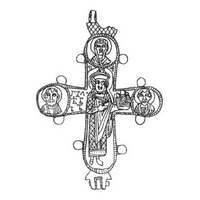

Catalog › CE-0931 · KOR2003-II.3.1.54
Valvă de revers cu prinț și sfinți în medalioane, Maica Domnului sus, ornament în plasă la balamale
sec. a doua pătrime XII (1101–1200) · loc necunoscut · Muzeul Rus de Stat, Sankt Petersburg (GRM), inv. ДР/М 1567 (11780)
single valve of a reliquary cross, aramă; c. a doua pătrime XII (1101–1200); find spot unknown; kept at Muzeul Rus de Stat, Sankt Petersburg (GRM).


Identificare
- Categorie
- Valvă izolată
- Material
- Aramă
- Tehnică
- Turnare în relief; Gravare (incizie)
- Dimensiuni
- Î 60 × L 53 mm
Iconografie
- Revers
- Neidentificat
- Descriere revers
- Balama dreaptă de sus ruptă. Imagini reliefate, puțin șterse, dar destul de clare, ale prințului cu model de biserică în mâna stângă și ale sfinților în medalioane, cu detaliere. În medalionul de sus se ghicește imaginea Maicii Domnului (se văd cutele maforionului). Sfântul din medalionul stâng este cu barbă, cel din dreapta fără barbă (?). Bordura de la marginile valvei este dințată; baza perechii de balamale de sus este împodobită cu un ornament adâncit în formă de plasă oblică.
- Inscripții
- Г[Ъ]Л...Б/ЪБ (umărul drept al prințului); НР (medalion sus); [Н] (stânga); [М] (dreapta)
- Limba
- Slavonă
Datare și atribuire
- Datare
- sec. a doua pătrime XII (1101–1200)
- Centru
- Necunoscut
- Tipologie
- Korzukhina–Peskova 2003, tip II 3 1
Descoperire
- Context
- Colecție (fără context)
Păstrare și referințe
- Colecție
- Muzeul Rus de Stat, Sankt Petersburg (GRM)
- Nr. inventar
- ДР/М 1567 (11780)
- Bibliografie
- G. F. Korzukhina, A. A. Peskova, Древнерусские энколпионы. Нагрудные кресты-реликварии XI–XIII вв., Sankt-Petersburg, 2003 [Korzukhina–Peskova 2003], p. 93, cat. nr. II 3 1/54, reprodusă la Табл. 40 (planșe, p. 282). Bibliografie citată în sursă: Алешковский 1972, фото на с. 117; Корзухина, архив ф. 77, д. 15, л. 29.
- Figura
- Табл. 40
- Planșe
- Korzukhina–Peskova 2003, Табл. 40 (planșă fără paginație proprie în PDF; p. 282 tipărită)
- Observații
- Datare după Peskova: sec. a doua pătrime XII. Inscripții adâncite; cele din medalioane abia vizibile. Lectura inscripției de la umărul drept este nesigură; de verificat pe original. Desen de G. F. Korzuhina pe planșă. Coordonate: nu sunt date în sursă.
Citare: Corpus Encolpiorum, CE-0931, Valvă de revers cu prinț și sfinți în medalioane, Maica Domnului sus, ornament în plasă la balamale, https://vitaliejosanu1979-ux.github.io/primul-meu-proiect/piese/KOR2003-II.3.1.54/ (accesat 2026-10-17).